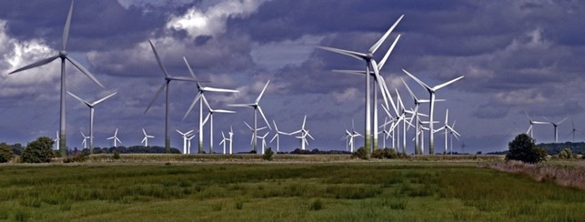
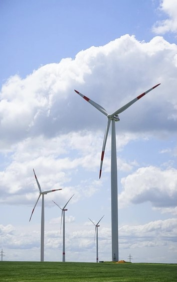

Das Windkraftwerk
Aus der Facharbeit von Dorothee Milles.
Mit Windkraftwerken können wir aus Sonnenenergie elektrische Energie (oder Wärmeenergie) gewinnen. Mit dieser gewonnenen Energie kann durch Elektrolyse eine große Menge an grünem Wasserstoff erzeugt werden.
Doch erst einmal muss erklärt werden, wie Wind überhaupt entsteht: Durch die Sonne bzw. der Sonnenenergie wird die Luft an verschiedenen Stellen unterschiedlich stark erhitzt, wobei Hoch- und Tiefdruckgebiete entstehen. Wind wird nun erzeugt, wenn die-ser Druckunterschied durch Luftmassen (bestehend aus Luftteilchen) ausgeglichen wird. Der Wind ist ganz simpel ausgedrückt eine schnellere und stärkere Luftmasse als die restliche, angeregt von der Energie der Sonne.
Die Rotorblätter und der Rotor eines Windrades fangen die
Bewegungsenergie (kineti-sche Energie) des Windes auf und wandeln sie
in Rotationsenergie um. Daher müssen die Blätter möglichst lang und
großflächig sein. Damit es zu einer Leistungsentnahme kommen kann,
muss die Strömungsgeschwindigkeit des Windes verringert werden. Laut
dem berühmten Physiker Betz steigt die Leistung mit ~v3 und ~r2. So
erhält man also bei doppelter Geschwindigkeit eine achtfache Leistung
und bei doppeltem Rotordurchschnitt eine vierfache Leistung. Dies
zeigt, wie effizient Windräder sind.
Anschließend wandelt das Getriebe die relativ langsamen Umdrehungen
des Rotors (ca. 22 pro Minute) in eine schnelle Drehzahl (ca. 1500
Umdrehungen pro Minute) für den Generator um. Der Generator ist das
Herz des Windrades, da er die Rotationsenergie in elektrische Energie
umwandelt.
Um zu zeigen, wie effizient Windkraftanlagen sind, hier nun ein
Beispiel: Der Windpark „Gode Wind 1 und 2“ befindet sich in der
Nordsee und umfasst 97 Windkraftwerke mit je einer Leistung von 6MW.
Dabei liefert Gode Wind 1 ca. 330MW und Gode Wind 2 ca. 252MW, womit
sie zusammen ganze 600.000 Haushalte versorgen können. In Deutschland
könnte man mit dem grünen Strom der Windräder schadstofffrei 1,1
Milli-arden Tonnen Wasserstoff herstellen. Anhand meines Textes und
dem Beispiel wird deutlich, wie sehr sich die Windenergie lohnt und
was für ein Potenzial diese mit dem grünen Wasserstoff für unsere
Zukunft hat.
Bsp. Energieberechnung des Windparks Gode Wind 1 und 2:
Volllaststunden pro Jahr: \(365 \cdot 24h = 8760h\)
\[8760h \cdot 3600 = 31.536.000s \]
Leistung P von den Windparks: \(330MW + 252MW = 582MW\)
\[P \cdot t = W\]
Theoretisch maximaler Energieertrag:
\[582MW \cdot 31.536.000s = 1,8353952 \cdot 10^{16} MWs\] \[1,8353952 \cdot 10^{16} MWs = 5,098 \cdot 10^9 kWh\]
45,7% davon entsprechen einem realistischer Energiebetrag:
2 329 932 240 kWh
Menge an Wasserstoff:
In einem kg Wasserstoff können 33,3kWh Energie gespeichert werden, also:
W = Energiewasserstoff / kg
\[ \frac {2.329.932.240 kWh \cdot kg} {33,3 kWh} = 69.963.543,5 kg \]
 